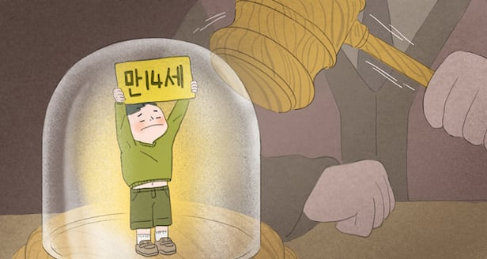
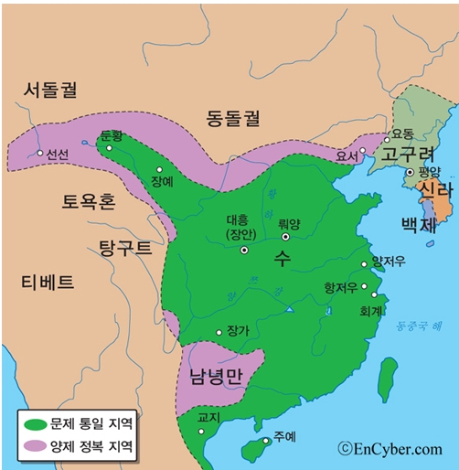
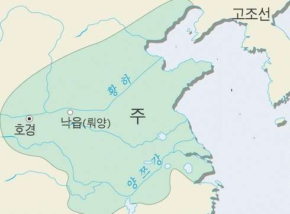
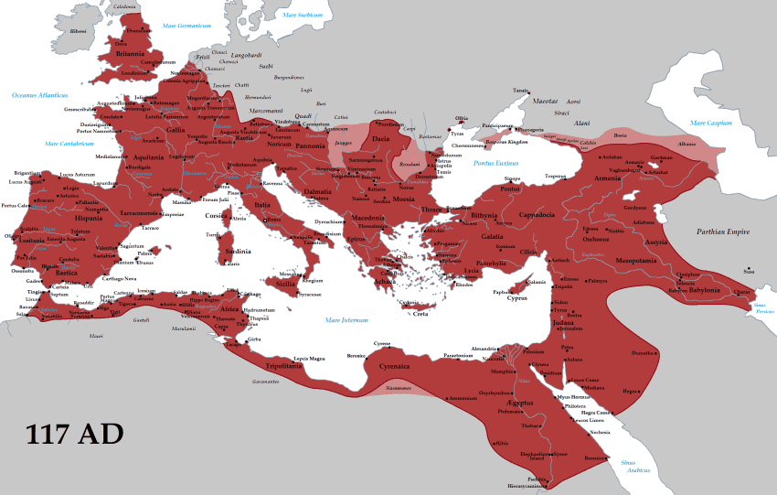
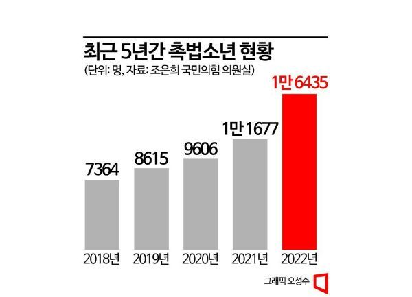
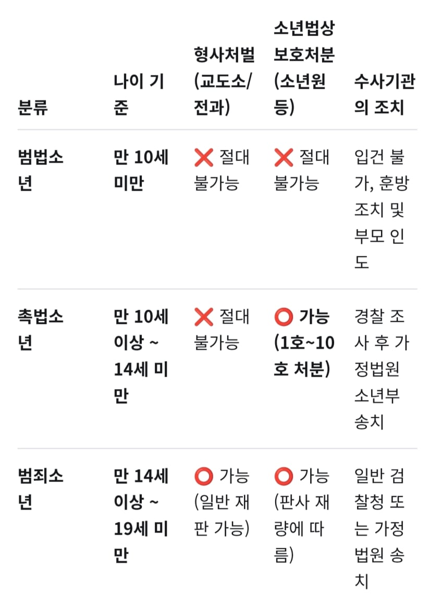
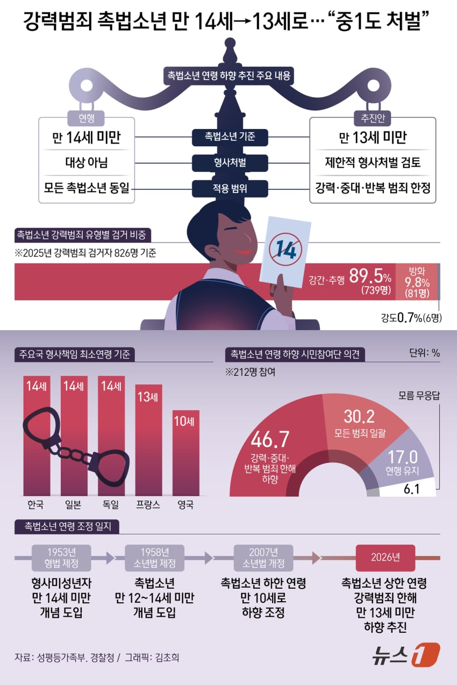

"촉법"은 근현대 와서야 생긴 ㅇㅁ뒈진 법이라고 오해 받는데, 한반도 기준 삼국시대 중후반기 때부터 있었다는 것이 유력함
수나라의 율령을 삼국이 거의 배껴서 채용했었는데,

거기에 7세 이하는 완전 면책, 7~10세는 무조건 벌금형, 10~14세 벌금형 및 유배시 감형이 들어있기 때문임
(단, 대역죄의 경우는 제외)
확실히 촉법이 있다고 나와있는건 고려시대의 법인 "고려률"
내용은 위와 같다
조선시대 경국대전의 촉법도 고려률과 이하동문
중국의 촉법은 무려 3천년 전 주나라 때부터 이어졌었음

(제대로 성문화된건 한나라 때부터)
고조선은 촉법 그 딴거 없이 눈에는 눈, 이에는 이 사형! ㅋㅋㅋㅋ
신기한건 고대로마도 중국의 촉법과 거의 비슷했는데

7세 미만은 무조건 면책
(중국이나 한국은 7세 이하 면책)
남자 7~14세 조건부 면책
여자 7~12세 조건부 면책
13세기 영국에서 촉법이 성문화됨
(그 전에도 전유럽에서 관습적으로 있긴 했다)
다만 문제는 한국의 촉법소년이 근 몇년간 꾸준히 증가 중임

신기하게 살인사건의 거의 없다시피하긴함
(작년에도 촉법 살인은 없었음)
다만 작년 강력범죄(살인, 성폭력, 강도, 방화) 촉법가해자 826명인데, 그 중 739명(89.5퍼)가 성범죄임 ㅋㅋㅋㅋ
작년 한국 전체 범죄 중 강력범죄 비율이 1.47퍼인 것과 비교시,
촉법의 강력범죄비율 3.9퍼는 대단히 높은 것이라함 ㄷㄷ
현대 한국의 촉법은 고려·조선의 촉법과 크게 다르지 않다

(참고로 일본도 거의 똑같음. 최초의 촉법 도입시기도 7세기즈음으로 신라와 비슷)
과거 유명한 사건으로는 조선 정조 때 황해도의 만 12세 이명화게이가 동네친구 이성진게이랑 놀다가 돌과 몽둥이로 찍어 죽였음
황해도를 발칵 뒤집은 사건이었고, 이를 어떻게 처리할지 열띤 토론이 벌어졌는데 실무관료들이 정조한테 짬 때림
(조선은 살인은 무조건 사형이라는 "살인자사"의 원칙이 지엄했다)
정조는 고민하다가 유배형으로 정함 ㅇㅅㅇ

현재 한국은 촉법 연령제한을 13세미만으로 하는걸 추진 중이라함

댓글
수집 당시 댓글 109개
땨뗘(봇) · 11.04 22:35:05
암타황제강시현 · 11.04 22:35:50
말들갑왕 · 11.04 22:38:02
ㅇㅇ · 11.04 22:38:48
· ㅇㅇ · 11.04 22:43:21
· ㅇㅇ · 11.04 22:46:45
· ㅇㅇ · 11.04 22:52:10
· ㅇㅇ · 11.05 00:01:10
· ㅇㅇ · 11.05 00:08:37
· ㅇㅇ · 11.05 00:27:31
· ㅇㅇ · 11.05 00:27:57
· ㅇㅇ · 11.05 00:28:39
· ㅇㅇ · 11.05 00:55:45
· 킹갓롤황 · 11.05 01:21:31
· ㅇㅇ · 11.05 09:50:44
· ㅇㅁㅇ)っ · 11.05 09:58:55
· ㅇㅇ · 11.05 10:02:05
· 킹갓롤황 · 11.05 10:06:03
· 킹갓롤황 · 11.05 10:06:29
· ㅇㅁㅇ)っ · 11.05 10:22:44
· 오비체 · 11.05 10:53:37
· ㅁㅂ · 11.05 11:16:53
· ㅇㅇ · 11.05 20:08:59
· ㅇㅇ · 11.05 20:09:44
· 킹갓롤황 · 11.05 20:21:30
· ㅇㅇ · 11.05 21:45:53
ㅇㅇ · 11.04 22:39:18
ㅇㅇ · 11.04 22:39:50
ㅇㅇ · 11.04 22:40:06
ㅇㅇ · 11.04 22:40:10
벅통 · 11.04 22:40:51
ㅇㅇ · 11.04 22:41:40
ㅇㅇ · 11.04 22:43:59
· ㅇㅇ · 11.05 01:45:21
ㅇㅇ · 11.04 22:44:56
ㅇㅇ · 11.04 22:45:06
· ㅇㅇ · 11.04 22:45:28
· ㅇㅇ · 11.04 22:45:50
ㅇㅇ · 11.04 22:45:42
ㅇㅇ · 11.04 22:46:18
ㅇㅇ · 11.04 22:47:48
공정성장 · 11.04 22:49:50
ㅇㅇ · 11.04 22:51:11
트황연임 · 11.04 22:51:29
ㅇㅇ · 11.04 22:55:35
ㅇㅇ · 11.04 22:56:11
· ㅇㅇ · 11.04 22:58:20
· ㅇㅇ · 11.04 22:59:45
· ㅇㅇ · 11.04 23:00:09
· ㅇㅇ · 11.04 23:02:24
· ㅇㅇ · 11.04 23:03:18
· ㅇㅇ · 11.04 23:05:34
· ㅇㅇ · 11.04 23:05:55
· ㅇㅇ · 11.04 23:09:49
ㅇㅇ · 11.04 22:59:04
· ㅇㅇ · 11.04 23:29:16
· ㅇㅇ · 11.04 23:41:07
ㅇㅇ · 11.04 23:01:44
ㅇㅇ · 11.04 23:02:43
ㅇㅇ · 11.04 23:04:24
ㅇㅇ · 11.04 23:05:18
· ㅇㅇ · 11.04 23:05:39
ㅇㅇ · 11.04 23:09:39
ㅇㅇ · 11.04 23:22:16
🤷♀️
ㅇㅇ · 11.04 23:25:55
· ㅇㅇ · 11.04 23:41:32
· ㅇㅇ · 11.04 23:58:24
ㅇㅇ · 11.04 23:37:29
· ㅇㅇ · 11.05 00:07:02
환란 전 교회 휴거 · 11.05 00:10:35
ㅇㅇ · 11.05 00:16:03
ㄴㅁㄴㅁ · 11.05 00:19:27
무료디시콘 · 11.05 00:38:26
ㅇㅇ · 11.05 00:41:38
ㅇㅇ · 11.05 00:44:12
황족 · 11.05 00:51:12
ㅇㅇ · 11.05 01:05:16
ㅅㅇ · 11.05 01:52:58
레비아탄 · 11.05 01:56:46
ㅇㅇ · 11.05 02:33:15
ㅇㅇ · 11.05 03:09:44
ㅇㅅㅇ · 11.05 03:39:03
ㅇㅇ · 11.05 05:11:30
ㆁㆁ · 11.05 05:49:21
ㅇㅇ · 11.05 07:33:02
ㅇㅇ · 11.05 08:07:01
🤏
ㅇㅇ · 11.05 08:42:10
ㅇㅇ · 11.05 09:02:24
ㅇㅇ · 11.05 09:17:40
· ㅇㅇ · 11.05 09:17:56
ㅇㅇ · 11.05 10:50:36
ㅇㅇ · 11.05 10:52:30
ㅇㅇ · 11.05 11:12:47
JungNu · 11.05 11:29:08
ㅇㅇ · 11.05 11:33:27
ㅇㅇ · 11.05 11:49:45
ㅇㅇ · 11.05 12:15:27
ㅇㅇ · 11.05 12:36:09
ㅇㅇ · 11.05 14:10:01
ㅇㅇ · 11.05 17:08:05
공부좃가태 · 11.03 00:50:47
· ㅇㅇ · 11.04 22:49:58
ㅇㅇ · 11.03 00:53:05
ㅇㅇ · 11.03 00:53:38
마공 · 11.03 00:58:48
· ㅇㅇ · 11.03 01:17:30
· 고소 · 11.05 12:13:14
ㅇㅇ · 11.03 01:06:42
ㅇㅇ · 11.03 08:51:58